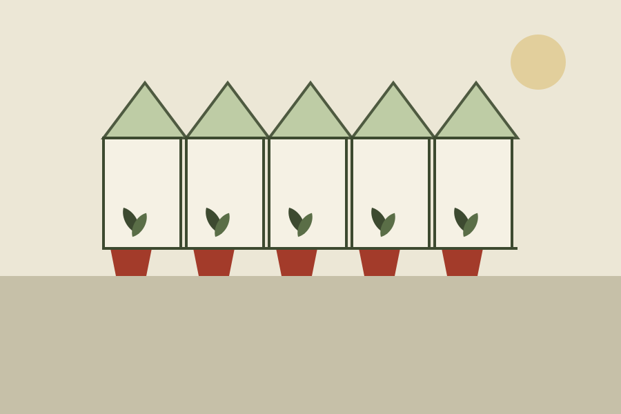

Ferns for shade
Forty species, from the hart's-tongue that will grow in a wall to tree ferns that want a sheltered corner and a winter coat.
A small nursery in the valley
Fallow & Fern raises hardy perennials, ferns and native trees on four acres of clay and chalk. Everything is grown outdoors, so it has already met the weather you will plant it into.

Forty species, from the hart's-tongue that will grow in a wall to tree ferns that want a sheltered corner and a winter coat.

Geraniums, astrantias, hellebores and grasses that have proved themselves in our heavy soil, sold in terracotta you can bring back.

Packets of what did well this year, collected by hand from the beds behind the barn. The label tells you the bed and the date.

The glasshouse
Come in through the glasshouse. There is tea, a table of whatever is looking good this week, and someone who knows the plants. Dogs on leads, children off them.
Hours and directionsTell us what your soil does after rain — puddles, drains, cracks — and whether the spot sees the sun at noon. Those two facts settle most of it. The field guide carries the same notes for every plant we sell.
Within the valley, on Tuesdays, by van. Further than that we can post seed and bare-root trees in winter, but not pots.
Bring the label back within a year and we will replace it, and talk about why. Usually it is the drainage.